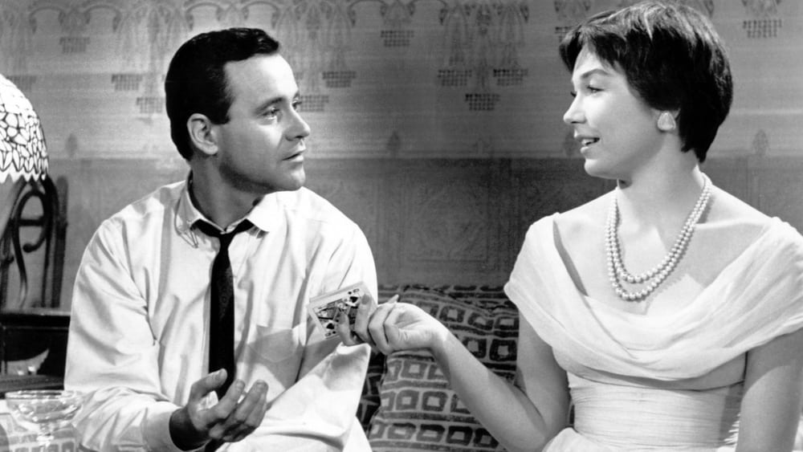

-
Top 5 Alternative Christmas Movies
by Mitchel Green - December 21, 2023
|
mitchelgreen34@gmail.com

source: The Movie Database
Movie-watching may be the thing I associate most with the holiday season. It’s usually a time of year when I have the most time without work or school, and what better way to spend it than doing what I love? But, as much as I love throwing on TV and watching “Home Alone” or “Elf” (and reluctantly letting my grandmother put on the 24-hour marathon of “A Christmas Story”), eventually, you need to break away from tradition and add some new films into your personal canon. There’s a range of emotions and settings associated with this time of year that the standard Hollywood Christmas fare doesn’t explore, and this list highlights some of those alternatives, many of which come from legendary filmmakers.
5. Dekalog: Three (dir. Krzysztof Kieślowski)
The holidays aren’t a happy time for everyone, and I don’t think any film better understands that than the third entry in Krzysztof Kieślowski’s masterful “Dekalog” series. Each episode of “Dekalog” deals, at least loosely, with one of the Ten Commandments (though many, including episode three, deal with several at once). Episode three deals primarily with the commandment that states the Sabbath day should be kept holy. Kieślowski is working more with the idea of the importance of holidays in general, but that loose adherence to the specific commandment allows him to tackle adultery and its ramifications simultaneously. In the episode, Janusz, while at mass with his family on Christmas Eve, spots Ewa, the woman with whom he had an affair in the past. Ewa asks him to help her find her husband and gets him to leave his family on Christmas Eve. Eventually, Ewa reveals she had left her husband years ago after their affair and has been lonely and depressed ever since, with the hope that Janusz may return to her keeping her going. The desire to be with the person she loves at Christmastime has driven her to nearly commit suicide if her plan to get Janusz to stay with her all night didn’t work. The episode is incredibly thematically complex for its length and deeply unsatisfying for all characters. It works for the religious and non-religious alike, and although it’s not something you’d want to throw on to watch with your family at Christmas, it explores emotions that films about the holidays often won’t dare to touch.
4. The Shop Around the Corner (dir. Ernst Lubitsch)
Though years of television airplay have made Frank Capra’s “It’s a Wonderful Life” the canonical Jimmy Stewart Christmas classic, his comparatively underseen Ernst Lubitsch-directed romantic comedy “The Shop Around the Corner” might be Stewart’s real holiday season masterpiece. Fans of “You’ve Got Mail” will recognize the story of two professional rivals who don’t realize they are falling in love through anonymous letters to each other. It’s a classic rom-com, so you know they’ll end up together and have a happy ending, but as with the other films on this list, I want to highlight films that work on more melancholic notes, too. The subplot in which Mr. Matuschek’s wife cheats on him, and he is left alone on Christmas Eve is powerful in ways lighter Christmas movies usually aren’t. Of course, that plotline gets a happy ending when he and Pepi, the one who saved him from suicide, find joy in each other’s company over Christmas dinner. But the resolution to Mr. Matuschek’s story is a nice subversion of a character whose happy ending seems like it should be a record sales day on Christmas Eve. Instead, it rejects the consumerist happy ending for the humanist one.
3. Eyes Wide Shut (dir. Stanley Kubrick)
If you’re like me and decided to take your entire family to see “Babylon” last Christmas, watching “Eyes Wide Shut” with them this year probably isn’t a bridge too far. At least you can play it off by insisting on its status as a Christmas classic. One might ask what a film about a secret sex cult has to do with Christmas, but Kubrick uses that time of year to underpin the major theme of his final masterpiece: desire. In “Eyes Wide Shut,” Kubrick is primarily interested in sexual desire and dissatisfaction. By setting the film at Christmastime, Kubrick creates parallels between the characters’ insatiable lust and the desire for more consumer goods typically associated with the holiday season. It’s no coincidence that at the end of the film when the conflict between Bill and Alice resolves and their sexual desires will soon be fulfilled by each other, the couple is shopping for Christmas presents. Christmas is also used to create an even greater sense of fantasy in this fake New York he has built. From the colorful lights to the overdone decorations, Kubrick captures the otherworldly feeling that comes at Christmas. There isn’t much tangible difference between walking around town on December 20th and December 28th, but the vibe has changed completely. The Christmas period has this gloss of falseness that can be both joyous and, as “Eyes Wide Shut” shows, anxiety-inducing.
2. The Umbrellas of Cherbourg (dir. Jacques Demy)
Technically, Jacques Demy’s “The Umbrellas of Cherbourg” isn’t a Christmas movie until the final minutes, but it fits the holiday for a few reasons. One, the Christmas Eve ending is played with such beautiful, bittersweet understatement that captures the joy of being with your loved ones at Christmas and the melancholy of not being with those you really want to be with. It’s the film’s most memorable sequence and the primary reason I associate it with Christmastime. Two, something about the musical genre makes it more appealing to watch in December than at other times of the year. The sentimentality, earnestness, and joy at the core of most movie musicals bring those warm feelings often associated with the holiday season. “The Umbrellas of Cherbourg” works as a Christmas movie precisely because it doesn’t just work on those levels. It understands the feeling of sadness that works in tandem with that joy and makes the positive emotions feel more special.
1. The Apartment (dir. Billy Wilder)
Speaking of films that capture a perfect tonal balance between deep melancholy and the euphoria of Christmastime, nobody does it better than Billy Wilder in his Best Picture-winning film “The Apartment.” Few films can be this funny and this tragic. While Wilder and I.A.L Diamond’s all-time great script is a major reason, the key is in the performances, particularly of Jack Lemmon as C.C. Baxter and Shirley MacLaine as Fran Kubelik. The two are so effortlessly able to bounce between tones, often in the same scene, that you never feel like you’re getting emotional whiplash. It helps that much of the comedy comes out of the tragedy. The way MacLaine delivers the line “I like it that way. Makes me look the way I feel.” about her mirror is both funny in the deadpan way she says it and still manages to be an emotional gut punch because of the bluntness with which she expresses her deep sadness. “The Apartment” also critiques the consumerism of Christmastime and the corporate culture that incentivizes it. No matter how high Baxter climbs, no matter what he owns, he can never enjoy it because he’s caught in a loop where he constantly has to be wanting more instead of enjoying what he has. Neither he nor Miss Kubelik will ever be satisfied through items and products. They can only be happy with the ones they love: each other.